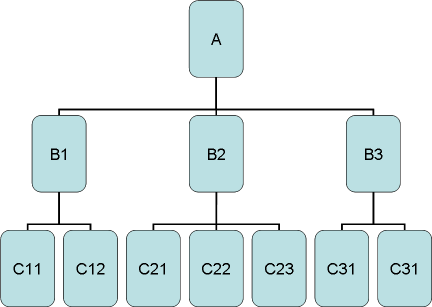

Tags for and implementation of a Query Stack.
The {@link PageStateManager} allows to have multiple queries alive and switch between them. All queries
use the same session attribute name, e.g. "query01" - so they can be viewed with the same jsp.
Example: the user starts with query A, then he displays one of the B queries. After that, she can
go back and see the query A in the state as it was when B was started.
Also when returning from B back to A, what happens to B depends on the "stackMode":
- in page mode, the query B is not touched, so it would be possible to redisplay its in the
same state as when the user left B.
- in stack mode, the query B is destroyed and resources are freed.
